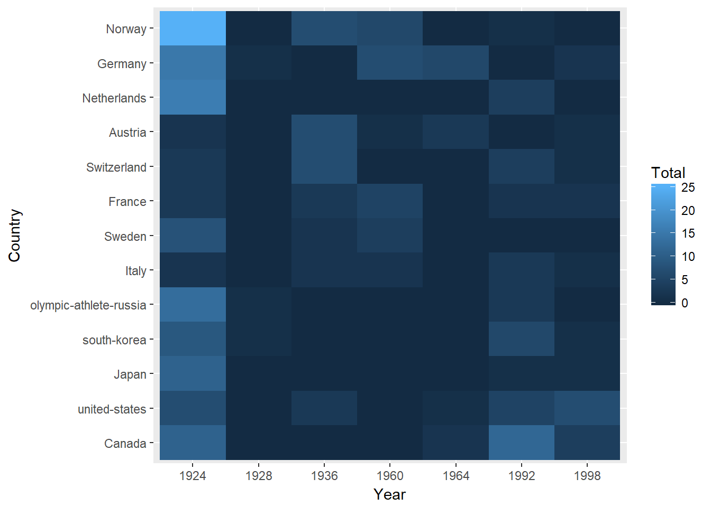
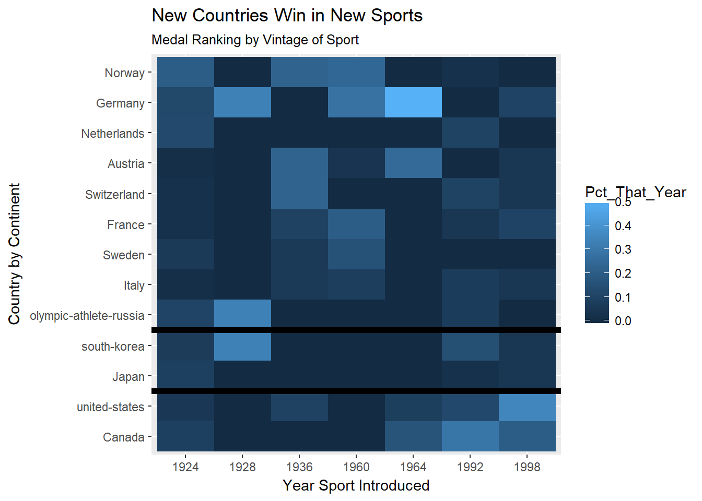

New Winter Sports for New Countries
Looking at Winter Olympic Medal Rankings by Vintage of Sport Introduction
Norway is a tiny country that punches way above its weight in the Winter Olympic medal count. We are not surprised as those folks are practically born on skis. At the same time, toussle-haired surfer dudes and dudettes from the US seem to be all over the hill when snowboards are involved. Notably, the sports where the US is most visible are sports which arose fairly recently. Is there a pattern here? Let’s do a quick hit to see if we can visualize the dominance of countries, not by event, but by vintage of a sport’s introduction to the games.
library(tidyverse)
library(rvest)
library(knitr)Scrape and Clean the Data from the Web
I chose to get the medal total by scraping the NBC site. Doubtless you could find another source for this. Making an error-proof run through the countries was like navigating slalom gates. The code is simple now but, due to variations in the tables from country to country it took a number of iterations to get this right. Using the “Inspect” feature of Google Chrome really helped me here to extract the right pieces (“xpath selectors”).
By the time you see this the web site may have changed or disappeared.
#get top medal countries. Countries with 10 or more medals in total
URL_stub<-"http://www.nbcolympics.com/medals/"
#the order of the countries is grouped by continent, then total medal count
countries<-as_factor(c("Norway","Germany","Netherlands","Austria","Switzerland",
"France","Sweden","Italy","olympic-athlete-russia",
"south-korea","Japan",
"united-states","Canada"))
all_medals<-data_frame()
for (country in countries){
print(country)
medals_raw<-read_html(paste0(URL_stub,country))
medals<-medals_raw %>%
html_node(xpath="//table[@class='grid-table grid-table-2018']") %>%
html_table() %>% .[,1:5] %>%
mutate(Country=country) %>%
# get rid of special chars
mutate(Sport=str_extract(Sport,"(\\w|\\-| )+")) %>%
select(Country,everything()) %>%
{.}
all_medals<-bind_rows(medals,all_medals)
}## [1] "Norway"
## [1] "Germany"
## [1] "Netherlands"
## [1] "Austria"
## [1] "Switzerland"
## [1] "France"
## [1] "Sweden"
## [1] "Italy"
## [1] "olympic-athlete-russia"
## [1] "south-korea"
## [1] "Japan"
## [1] "united-states"
## [1] "Canada"Now get the Wikipedia page that describes the first year an event was held. We are limiting ourselves to the broad class of sport. There are many snowboarding events that were introduced in different years. We are lumping all snowboard events together and using just the first year a snowboarding event was introduced.
Again, there is no guarantee that the Wikipedia page format won’t change in the future.
URL<-"https://en.wikipedia.org/wiki/Winter_Olympic_Games"
wiki_page_raw<-read_html(URL)
current_sports<-wiki_page_raw %>%
html_node(xpath="//*[@id='mw-content-text']/div/table[3]") %>%
html_table() %>% .[,1:4] %>%
mutate(Years=str_extract(Years,"\\d{4}")) %>%
rename(Notes=`Medal events contested in 2014`,Year=Years) %>%
mutate(Notes=str_replace(Notes,"\\[\\d+\\]",""))The names of the sports aren’t exactly the same at both sites so align the names of the sports in both tables.
#we can get some better alignment by forcing case agreement
all_medals<-all_medals %>% mutate(Sport=str_to_title(Sport))
current_sports<-current_sports %>% mutate(Sport=str_to_title(Sport))
#manually fix the four remaining problems
current_sports<-current_sports %>% mutate(Sport=ifelse(Sport=="Short Track Speed Skating","Short Track",Sport))
current_sports<-current_sports %>% mutate(Sport=ifelse(Sport=="Bobsleigh","Bobsled",Sport))
current_sports<-current_sports %>% mutate(Sport=ifelse(Sport=="Ice Hockey","Hockey",Sport))
current_sports<-current_sports %>% mutate(Sport=ifelse(Sport=="Cross-Country Skiing","Cross-Country",Sport))
#diplay clean results
all_medals %>% select(Sport) %>%
distinct() %>%
left_join(current_sports) %>%
arrange(Year) %>%
kable()| Sport | Year | Events | Notes |
|---|---|---|---|
| Figure Skating | 1924 | 5 | Men’s and women’s singles; pairs; ice dancing and team event. |
| Speed Skating | 1924 | 14 | Men’s and women’s 500 m, 1000 m, 1500 m, 5000 m, Massstart and team pursuit; women’s 3000 m; men’s 10,000 m. |
| Bobsled | 1924 | 3 | Four-man race, two-man race and two-woman race. |
| Hockey | 1924 | 2 | Men’s and women’s tournaments. |
| Curling | 1924 | 3 | Men’s, women’s and mixed doubles. tournaments. |
| Cross-Country | 1924 | 12 | Men’s sprint, team sprint, 30 km pursuit, 15 km, 50 km and 4x10 km relay; women’s sprint, team sprint, 15 km pursuit, 10 km, 30 km and 4x5 km relay. |
| Nordic Combined | 1924 | 3 | Men’s 10 km individual normal hill, 10 km individual large hill and team. |
| Ski Jumping | 1924 | 4 | Men’s individual large hill, team large hill; men’s and women’s individual normal hill. |
| Skeleton | 1928 | 2 | Men’s and women’s events. |
| Alpine Skiing | 1936 | 11 | Men’s and women’s downhill, super G, giant slalom, slalom, and combined, and parallel slalom. |
| Biathlon | 1960 | 11 | Sprint (men: 10 km; women: 7.5 km), the individual (men: 20 km; women: 15 km), pursuit (men: 12.5 km; women: 10 km), relay (men: 4x7.5 km; women: 4x6 km; mixed: 2x7.5 km+2x6 km), and the mass start (men: 15 km; women: 12.5 km). |
| Luge | 1964 | 4 | Men’s and women’s singles, men’s doubles, team relay. |
| Freestyle Skiing | 1992 | 10 | Men’s and women’s moguls, aerials, ski cross, superpipe, and slopestyle. |
| Short Track | 1992 | 8 | Men’s and women’s 500 m, 1000 m, 1500 m; women’s 3000 m relay; and men’s 5000 m relay. |
| Snowboarding | 1998 | 8 | Men’s and women’s parallel, half-pipe, snowboard cross, and slopestyle. |
Good! It must be noted that we are working with tiny data here. If my boss asked me to do this I would just manually create all these tables, in the interest of time. Here at OutsideRdata we do things, not the hard way, but the way that teaches us the most!
The cleaning is done. Now lets join the tables, make sure the countries are in the right order and add some observations using the oh-so-useful complete function to put zeros in the missing combinations of year and sport for every country.
final_table <- all_medals %>%
select(Country,Sport,Total) %>%
left_join(current_sports) %>% .[,1:4]
#make sure the order of the countries matches the order we started with
final_table$Country <- as_factor(final_table$Country,levels=levels(countries))
#fill empty cases with zero so there are no blanks in the plot
final_table <- final_table %>% complete(Country,Sport,Year,fill=list(Total=0))
agg_medals<-final_table %>% group_by(Country,Year) %>%
summarize(Total=sum(Total))
agg_medals[1:10,] %>% kable()| Country | Year | Total |
|---|---|---|
| Canada | 1924 | 11 |
| Canada | 1928 | 0 |
| Canada | 1936 | 0 |
| Canada | 1960 | 0 |
| Canada | 1964 | 2 |
| Canada | 1992 | 12 |
| Canada | 1998 | 4 |
| united-states | 1924 | 7 |
| united-states | 1928 | 0 |
| united-states | 1936 | 3 |
A Digression
A best practice with tidy data is to have every observation and every variable in a single data table. Where we want to use the data in a related table we use _join to add the data to the main table. This runs contrary to best practice in the early days of PC databases where “relational” was a big part of data manipulation. The data tables were kept separate and linked by keys. Keys are still how _join works, of course, but we just make one humongous table rather than look up the related fields on the fly. This is faster but uses more memory and/or storage. Back in the day when a couple megabytes of RAM was a lot, we cared about those things, even for small data projects. Now, we use local million-row tables with nary a blink of the eye. You kids don’t know how tough it was!
Visualize
agg_medals %>% ggplot(aes(Year,Country,fill=Total))+geom_tile()
We see some patterns emerging but this chart is mostly a reflection of the fact that most of the sports have been around since the beginning of the Winter games. There are more medals to be won in those sports. Let’s normalize the data by the fraction of total medals in each vintage. Also clean up the labels a bit.
agg_medals<-agg_medals %>%
group_by(Year) %>%
mutate(Pct_That_Year=Total/sum(Total))
agg_medals %>%
ggplot(aes(Year,Country,fill=Pct_That_Year))+geom_tile()+
labs(title="New Countries Win in New Sports",
subtitle="Medal Ranking by Vintage of Sport",
x="Year Sport Introduced",
y="Country by Continent")+
geom_hline(yintercept = 2.5,size=2)+
geom_hline(yintercept = 4.5,size=2)
There you have it. We clearly see that the U.S. and Canada come to the fore with the most recently introduced events. The schussing countries of Europe are a bit stronger in the older sports. Note the intersection of Germany and 1964. There was one sport inaugurated in 1964, luge. Likewise, in 1928 the only sport introduced was skeleton. Some events, like skeleton, appeared, dissapeared then reappeared again (in the case of skeleton, 2002). Biathalon is listed as a 1960 vintage sport - newish. Cross-country skiing is half the event and the Norwegians are very strong, of course. This shows the limitation of this analysis.
It is strange that skeleton, bobsled and luge are broken out as separate sports while “Alpine Skiing” is just one. For the purposes of this analysis it doesn’t affect the conclusions.
If we wanted to take this further, a more robust analysis would use several Olympics to get a larger sample size but I have to move on to March Madness!